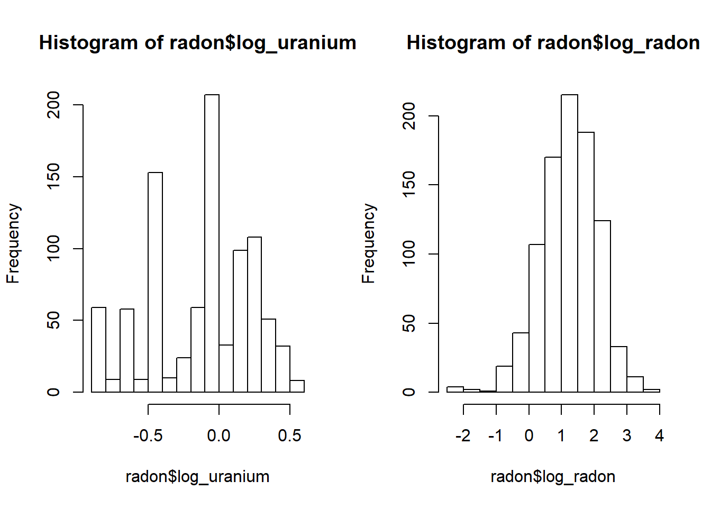

Le jeu de données radon.csv, tiré du manuel de Gelman et Hill, contient des mesures de concentration de radon (log_radon, échelle logarithmique) prises dans 919 maisons réparties dans 85 comtés (county) de l’état américain du Minnesota. Le nombre de maisons par comté varie de 1 à 116. Ce jeu de données inclut un prédicteur au niveau de la maison, soit l’étage où la mesure a été prise (floor, avec 0 = sous-sol et 1 = rez-de-chaussée) et un prédicteur au niveau du comté, soit la concentration d’uranium du sol (log_uranium, échelle logarithmique).
radon <- read.csv("../donnees/radon.csv")
head(radon)## county floor log_uranium log_radon
## 1 AITKIN 1 -0.6890476 0.7884574
## 2 AITKIN 0 -0.6890476 0.7884574
## 3 AITKIN 0 -0.6890476 1.0647107
## 4 AITKIN 0 -0.6890476 0.0000000
## 5 ANOKA 0 -0.8473129 1.1314021
## 6 ANOKA 0 -0.8473129 0.9162907Dans le modèle ci-dessous, \(y_i\) représente la valeur de log_radon pour l’observation \(i\) et \(x_i\) est l’étage de la mesure (0 ou 1). Nous supposons que le log de la concentration de radon est distribué normalement autour de la valeur moyenne attendue \(\mu_i\), avec un écart-type \(\sigma_y\).
\[y_i \sim \text{N}(\mu_i, \sigma_y)\]
La valeur moyenne \(\mu_i\) dépend d’une ordonnée à l’origine qui varie d’un comté à l’autre, où \(\beta_{0j[i]}\) est l’ordonnée à l’origine pour le comté \(j\) contenant l’observation \(i\), ainsi que d’une différence entre le rez-de-chaussée et le sous-sol (\(\beta_1\)) qui reste la même pour tous les comtés.
\[\mu_i = \beta_{0j[i]} + \beta_{1} x_i\]
Finalement, l’ordonnée à l’origine d’un comté (représentant la log-concentration moyenne de radon dans un sous-sol) suit une régression linéaire dont la moyenne dépend de la log-concentration d’uranium du comté, avec un écart-type de \(\sigma_{\beta_0}\).
\[\beta_{0j} \sim \text{N}(\gamma_0 + \gamma_{1j} u_j, \sigma_{\beta_0})\]
Le reste de ce document est consacré au codage de ce modèle avec Stan.
Dans RStudio, aller dans File -> New File -> Stan File. RStudio crée un nouveau fichier de code Stan contenant déjà un exemple de modèle. Enregistrez le ficher avec l’extension .stan (ex.: radon.stan) avant de continuer.
D’abord, remarquez que le symbole // sert à dénoter des commentaires dans Stan, contrairement à R qui utilise # pour la même fonction. Excepté ces commentaires, le fichier Stan créé contient trois blocs.
data: Définit les variables qui seront fournies au modèle comme données à l’entrée.parameters: Définit les variables qui doivent être estimées par le modèle.model: Définit le modèle statistique pour les données en fonction des paramères.La plupart des modèles Stan utilisent au minimum ces trois blocs, bien que d’autres blocs soient possibles: functions, transformed data, transformed parameters et generated quantities. Comme dans R, les blocs sont délimités par des accolades {}.
Le bloc model ne contient qu’une instruction, y ~ normal(mu, sigma);, qui indique que y suit une distribution normale avec moyenne mu et écart-type sigma. Dans Stan, le symbole ~ est utilisé pour assigner une certaine distribution de probabilité à une variable (contrairement à R où ce symbole sert à relier la réponse d’un modèle aux prédicteurs).
Note: Dans Stan, toutes les instructions doivent se terminer par un point-virgule ;, sauf celles qui débutent un bloc (comme model).
Contrairement à R, toutes les variables apparaissant dans un modèle Stan doivent être au préalable “déclarées”. La première ligne de data, int<lower=0> N; déclare la variable N qui est un nombre entier (type int pour integer) prenant une valeur minimale de 0. Il est important de différencier les variables int prenant seulement des valeurs entières des variables pouvant prendre n’importe quelle valeur réelle (real). La spécification de bornes inférieures (lower) ou supérieures (upper) est optionnelle pour les éléments de data, mais elles permettent à Stan de produire une erreur si les données fournies à l’entrée ne respectent pas ces bornes. Dans ce cas-ci, la borne inférieure devrait probablement être de 1 vu que les données contiennent au moins 1 observation.
La deuxième ligne de data, vector[N] y; déclare la variable y comme un vecteur de N éléments. Notez qu’il était important de déclarer N avant de l’utiliser dans la déclaration de y. Les vecteurs dans Stan fonctionnent de façon similaire à R, excepté qu’ils peuvent seulement être composés de nombres réels (nous verrons plus tard comment définir l’équivalent d’un vecteur pour des nombres entiers).
Le bloc parameters déclare deux variables réelles, mu et sigma, la deuxième étant contrainte à être supérieure ou égale à 0. Il est important de définir les valeurs minimales et maximales possibles pour les paramètres, sinon Stan pourrait tenter par exemple d’assigner une valeur négative à sigma, ce qui générerait une erreur lorsque celle-ci serait utilisée comme écart-type de la distribution normale dans le modèle.
Puisque y est un vecteur de N éléments, alors que mu et sigma contiennent chacun une seule valeur, l’instruction y ~ normal(mu, sigma); dans le bloc model indique que chaque élément de y suit la distribution normale avec paramètres mu et sigma. Dans un modèle de régression linéaire par exemple, mu serait aussi un vecteur de taille N, donc la même instruction associerait chaque y au mu correspondant, tandis que tous les éléments partageraient le même sigma.
Modifions maintenant le programme pour représenter notre modèle du radon. Commençons par décrire une régression linéaire simple du log de la concentration de radon en fonction de l’étage, en ignorant l’effet de l’uranium et l’effet aléatoire par comté.
Il est préférable de donner aux variables des noms plus descriptifs que x, y ou N. Dans le bloc data, changeons donc N pour n_obs (nombre d’observations) et y pour log_rad, le nom de notre variable réponse. Nous ajoutons aussi le prédicteur etage qui est un nombre entier compris entre 0 et 1.
Pour un nombre entier, nous ne pouvons pas définir un vecteur, mais plutôt un “tableau” (array) de n_obs éléments, comme suit: int<lower=0, upper=1> etage[n_obs];. Notez que dans ce cas la spécification du nombre d’éléments apparaît après le nom de la variable, contrairement à un vecteur où elle apparaît après le mot vector.
Dans le bloc parameters, remplaçons mu par deux paramètres de notre régression, b_0 (l’ordonnée à l’origine) et b_etage (l’effet de l’étage), tous deux réels.
Dans le bloc model, nous déclarons d’abord mu comme un vecteur de taille n_obs, qui contiendra la prédiction du modèle linéaire pour chaque observation. Les variables déclarées dans le bloc model servent souvent à définir des valeurs “intermédiaires” qui ne sont ni des paramètres du modèle, ni des données.
En plus de remplacer y par log_rad, nous devons maintenant spécifier l’équation pour mu. Si etage était un vecteur, nous pourrions simplement écrire mu = b_0 + b_etage * etage, dans lequel cas chaque valeur de mu serait calculé à partir de chaque valeur d’étage. Et en fait, nous aurions pu définir etage comme valeur réelle sans affecter les conclusions du modèle. Cependant, une autre option ici est de créer une boucle:
for (i in 1:n_obs)
mu[i] = b_0 + b_etage * etage[i];L’instruction for décrit une boucle, avec une variable de comptage i qui prendra successivement les valeurs de 1 à n_obs. Pour chaque valeur de i, les instructions dans la boucle sont exécutées, donc ici mu[i] reçoit une valeur déterminée par etage[i] et par les paramètres de la régression.
En général, les instructions de la boucle (le bloc for) devraient être délimitées par des accolades, mais celles-ci peuvent être omises lorsqu’il n’y a qu’une seule instruction.
Voici à quoi devrait ressembler votre modèle jusqu’à présent:
data {
int<lower=1> n_obs; // Nombre d'observations
vector[n_obs] log_rad; // Log-conc. radon
int<lower=0, upper=1> etage[n_obs];
}
parameters {
real b_0;
real b_etage;
real<lower=0> sigma;
}
model {
vector[n_obs] mu;
for (i in 1:n_obs)
mu[i] = b_0 + b_etage * etage[i];
log_rad ~ normal(mu, sigma);
} En haut à droite de la fenêtre du script, au lieu du bouton Run présent pour un script R, il y a un bouton Check qui permet de vérifier la syntaxe du modèle Stan.
Nous pouvons maintenant définir le deuxième niveau de la régression, soit l’effet de chaque comté et de sa concentration d’uranium sur l’ordonnée à l’origine b_0.
Tout d’abord, nous devons effectuer quelques modifications à nos données dans R. Dans Stan, une variable catégorielle doit être codée par des nombres entiers. Nous définission donc une nouvelle colonne du jeu de données radon pour le numéro de comté county_no, obtenu en convertissant le facteur county en nombre entier.
radon$county_no <- as.integer(radon$county)
head(radon)## county floor log_uranium log_radon county_no
## 1 AITKIN 1 -0.6890476 0.7884574 1
## 2 AITKIN 0 -0.6890476 0.7884574 1
## 3 AITKIN 0 -0.6890476 1.0647107 1
## 4 AITKIN 0 -0.6890476 0.0000000 1
## 5 ANOKA 0 -0.8473129 1.1314021 2
## 6 ANOKA 0 -0.8473129 0.9162907 2Ensuite, nous créons un jeu de données séparé pour les données au niveau du comté. La fonction distinct de dplyr conserve les combinaisons uniques de county_no et log_uranium présentes dans le jeu de données radon.
library(dplyr)
comtes <- distinct(radon, county_no, log_uranium) %>%
arrange(county_no)
head(comtes)## county_no log_uranium
## 1 1 -0.6890476
## 2 2 -0.8473129
## 3 3 -0.1134588
## 4 4 -0.5933525
## 5 5 -0.1428905
## 6 6 0.3870567Il est important d’ordonner ce deuxième jeu de données par numéro de comté, afin que les valeurs d’uranium soient données à Stan dans le bon ordre.
Nous sommes maintenant prêts à modifier le programme Stan. Sous data, nous devons déclarer les variables suivantes:
int<lower=1> n_comt; qui dénotera le nombre de comtés présents dans le jeu de données;int<lower=1, upper=n_comt> comte[n_obs];, un tableau contenant pour chaque observation le numéro du comté correspondant;vector[n_comt] log_u, un vecteur contenant le log de la concentration d’uranium pour chaque comté.Dans le bloc parameters, l’ordonnée à l’origine du modèle b_0 est maintenant un vecteur de n_comt valeurs et nous devons ajouter les paramètres réels suivants: g_0, l’ordonnée à l’origine de la régression de b_0 par comté; g_u, l’effet de l’uranium sur b_0 et sigma_b0, l’écart-type de b_0 autour de la valeur prédite par la concentration d’uranium.
Finalement, dans le bloc model, nous ajoutons l’équation pour la régression de b_0 par comté, qui suit une distribution normale de moyenne g_0 + g_u * log_u et d’écart-type sigma_b0.
b_0 ~ normal(g_0 + g_u * log_u, sigma_b0);Notez que puisque tous les éléments de cette équation sont soient des nombres réels, soient des vecteurs de longueur n_comt, il est possible de l’écrire d’un seul coup sans faire de boucle.
Dans l’équation pour mu, la valeur b_0 doit être remplacée par b_0[comte[i]]. Dans ce cas, pour chaque observation i, nous allons chercher le numéro de comté correspondant, puis la valeur de l’ordonnée à l’origine b_0 pour ce numéro de comté.
Note: Pour ce modèle-ci, l’effet aléatoire par comté b_0 est une valeur intermédiaire que nous aurions pu définir dans le bloc parameters ou model. La différence est qu’à la sortie du programme, Stan fournira des estimés de la distribution des variables définies dans parameters, mais pas celles définies dans model.
Ce modèle contient cinq paramètres actuellement sans distribution: g_0, g_u, b_etage, sigma_b0 et sigma. Si nous ne spécifions pas de distribution a priori pour ces paramètres, Stan choisit des distributions a priori extrêmement diffuses à l’intérieur des bornes spécifiées, qui produisent des estimés équivalents au maximum de vraisemblance. Cela fonctionne si on a beaucoup de données, mais comme nous avons vu dans le cours, il est recommandé dans l’approche bayésienne de choisir des distributions a priori qui établissent de légères contraintes sur la valeur de nos paramètres.
Ici, nos deux variables numériques (log_radon et log_uranium) ont une variation de l’ordre de quelques unités.
par(mfrow = c(1, 2))
hist(radon$log_uranium)
hist(radon$log_radon)
Dans ce cas, il est réaliste de penser que les coefficients seront de l’ordre de quelques unités et non pas de dizaines ou centaines. Lorsque les variables sont sur une échelle d’environ 1, les développeurs de Stan suggèrent des distributions a priori normales centrées réduites, définies par std_normal(), une fonction équivalente à normal(0, 1). Notez que pour les variables contraintes à être supérieures à zéro, comme sigma, la distribution a priori est tronquée à 0, donc nous avons seulement la moitié droite de la distribution normale centrée réduite.
Note: Si les variables sont sur des échelles très différentes, il peut être utile de les normaliser, par exemple avec scale dans R, car l’algorithme d’inférence bayésienne fonctionne mieux si toutes les variables ont des échelles comparables, plutôt que de comporter des valeurs très grandes et très petites.
Voici le programme obtenu jusqu’à maintenant:
data {
int<lower=1> n_obs; // Nombre d'observations
int<lower=1> n_comt; // Nombre de comtés
vector[n_obs] log_rad; // Log-conc. radon
int<lower=0, upper=1> etage[n_obs];
int<lower=1, upper=n_comt> comte[n_obs]; // No. de comté de chaque observation
vector[n_comt] log_u; // Log-conc. uranium par comté
}
parameters {
vector[n_comt] b_0;
real b_etage; //
real g_0; // Ordonnée à l'origine pour le modèle de b_0 par comté
real g_u; // Effet de log_u sur b_0 par comté
real<lower=0> sigma_b0;
real<lower=0> sigma;
}
model {
vector[n_obs] mu;
b_etage ~ std_normal();
g_0 ~ std_normal();
g_u ~ std_normal();
sigma_b0 ~ std_normal();
sigma ~ std_normal();
b_0 ~ normal(g_0 + g_u * log_u, sigma_b0);
for (i in 1:n_obs)
mu[i] = b_0[comte[i]] + b_etage * etage[i];
log_rad ~ normal(mu, sigma);
} Dans le modèle ci-dessous, nous demandons à Stan d’estimer à la fois les effets aléatoires b_0 de chaque comté, ainsi que leur écart-type sigma_b0. Pour des raisons que nous discuterons davantage au prochain cours en présentant l’algorithme d’inférence, la dépendance entre ces quantités peut poser problème. Brièvement, cela est dû au fait que plus l’écart-type sigma_b0 est petit, plus les effets b_0 sont contraints près de 0.
Il est donc recommandé d’utiliser une paramétrisation “non-centrée” pour les effets aléatoires dans Stan. L’équation pour \(\beta_{0j}\) dans notre modèle:
\[\beta_{0j} \sim \text{N}(\gamma_0 + \gamma_{1j} u_j, \sigma_{\beta_0})\]
peut être ré-écrite ainsi:
\[\beta_{0j} = \gamma_0 + \gamma_{1j} u_j + \sigma_{\beta_0} \nu_j\]
où \(\nu_j \sim \text{N}(0, 1)\) est une variable normale centrée réduite. Puisque les effets aléatoires \(\nu_j\) sont représentés en multiples de \(\sigma_{\beta_0}\), ces deux paramètres se retrouvent donc découplés.
Dans le code ci-dessous, nous avons utilisé la variable b0_alea pour \(\nu_j\). Puisque b_0 est maintenant une valeur dépendant entièrement d’une combinaison d’autres paramètres et de données, nous pouvons la définir dans un nouveau bloc transformed parameters. La distribution des variables dans ce bloc, comme celles de parameters, seront données par Stan à la sortie du programme.
data {
int<lower=1> n_obs; // Nombre d'observations
int<lower=1> n_comt; // Nombre de comtés
vector[n_obs] log_rad; // Log-conc. radon
int<lower=0, upper=1> etage[n_obs];
int<lower=1, upper=n_comt> comte[n_obs]; // No. de comté de chaque observation
vector[n_comt] log_u; // Log-conc. uranium par comté
}
parameters {
vector[n_comt] b0_alea; // Portion aléatoire de b_0
real b_etage; //
real g_0; // Ordonnée à l'origine pour le modèle de b_0 par comté
real g_u; // Effet de log_u sur b_0 par comté
real<lower=0> sigma_b0;
real<lower=0> sigma;
}
transformed parameters {
vector[n_comt] b_0; // Ordonnée à l'origine par comté
b_0 = g_0 + g_u * log_u + sigma_b0 * b0_alea;
}
model {
vector[n_obs] mu;
b_etage ~ std_normal();
g_0 ~ std_normal();
g_u ~ std_normal();
sigma_b0 ~ std_normal();
sigma ~ std_normal();
b0_alea ~ std_normal();
for (i in 1:n_obs)
mu[i] = b_0[comte[i]] + b_etage * etage[i];
log_rad ~ normal(mu, sigma);
} Documentation pour Stan: https://mc-stan.org/users/documentation/